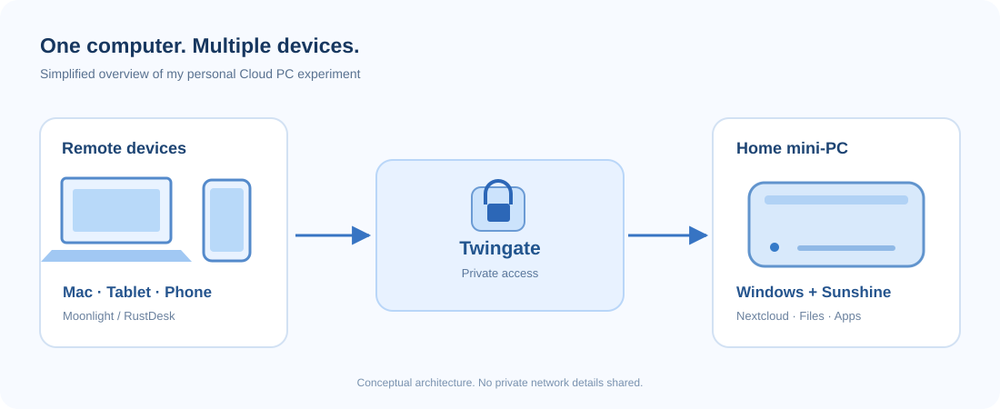

Why build a personal cloud PC at all?
I wanted to know whether the same computer could serve me across different devices, without copying files or reinstalling applications. The idea was to keep one working environment on a small machine at home.
A laptop, tablet or phone would become a way of reaching that environment. What interested me was not a complicated server architecture, but whether this could be useful in everyday life.

What kind of hardware is enough today?
The core of the setup is a compact mini-PC with an AMD Ryzen processor, connected to my router over Ethernet. The machine stays available at home while the devices I carry can be lighter and simpler.
It is not a replacement for a professionally managed data centre. For this experiment, reliable operation, a stable network and sufficient performance were the practical priorities.
How do you make a home computer accessible from anywhere?
I did not want to expose remote-desktop services to the public internet by opening ports on the router. I used Twingate to create a private access path from my devices to the home computer.
This reduced the need for public-facing connections while keeping the remote machine reachable when I needed it. Security is still an ongoing responsibility, not something solved once during installation.
How do you make a remote desktop actually usable?
A connection can work technically and still feel slow. To explore a smoother remote desktop, I tested Sunshine on the Windows host and Moonlight on the connecting device. Sunshine handles streaming, while Moonlight displays the session.
I kept RustDesk as an alternative for administration and troubleshooting. Network conditions, latency and display resolution still determine whether a remote session feels comfortable.
Can the same machine replace cloud storage services?
Once the computer was running continuously, I also installed Nextcloud. That added file synchronisation and access through browsers or dedicated applications.
Hosting the service at home gives me control over the data and configuration, but also responsibility for updates, monitoring and backups. I treat it as a personal learning project, not a universal replacement for managed services.
Helpful resources and lessons learned
The original article links to the tools and to a useful tutorial covering private network access and remote administration. I have kept those resources available below for anyone interested in understanding the components.
The lesson for me was that cloud-like access no longer requires distant infrastructure for every use case. A modest computer at home can be a useful workstation, file service and place to learn, as long as its limitations are understood.
Edited web edition of an article first published on LinkedIn on 8 March 2026. Not a verbatim reproduction.